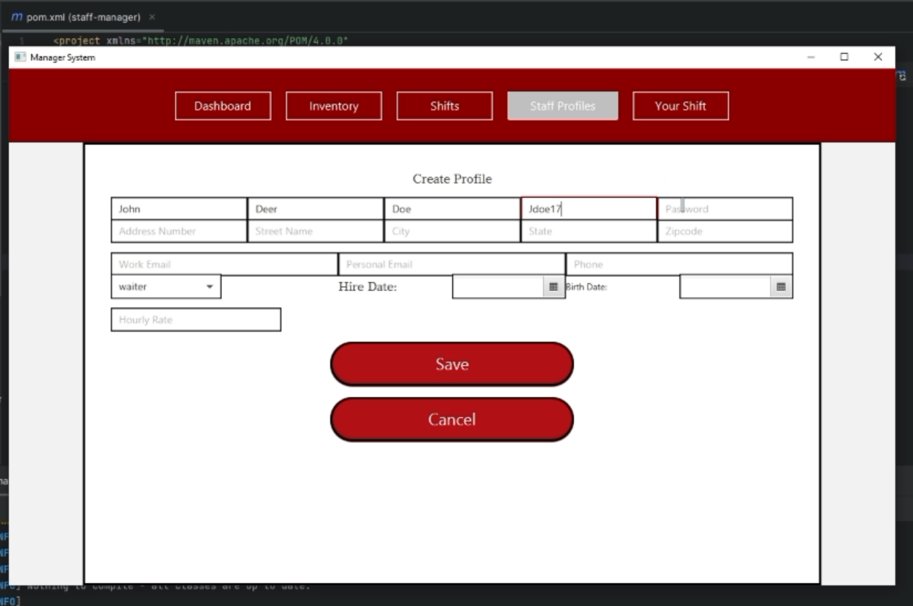
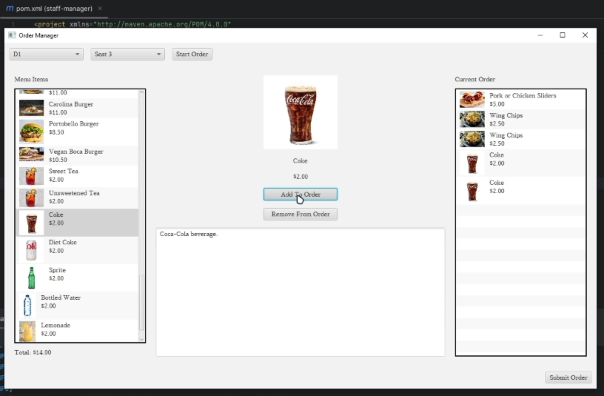

One project I'm particularly proud of is from my Introduction to Software Engineering class, in which I created part of a resturant management software for my group. One of my sections involved developing a managerial section, in which staff accounts could be created, altered, and deleted. The other section I developed was an order manager, in which waiters could create orders for tables, add items to orders, calculate a running total, and push orders to an order file that would log them. Overall, I was proud of what I was able to create with such limited time, and it really taught me the value of project time and importance of setting feasible deliverable goals.

